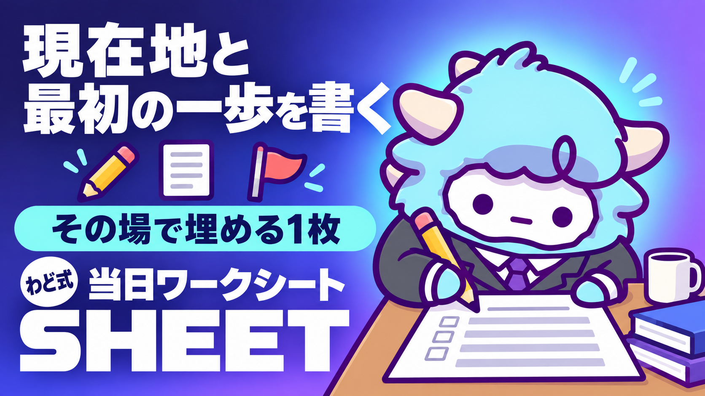

当日ワークシート（現在地→最初の一歩）
セミナー中に埋める1枚。T5 診断シートの前段
このページが特典の本体です。下へスクロールして使ってください当日ワークシート（現在地→最初の一歩）
セミナーのその場で1枚だけ埋めて、「今日どこにいるか」と「今日やる最初の一歩」を自分の言葉にします。持ち帰るのは知識ではなく、次にやる1行です。
はじめに
わどです。
このワークシートは、セミナーの中で実際に手を動かしながら埋める1枚です。話を聞いて「なるほど」で終わらせず、今日この時間のうちに、自分の現在地と最初の一歩を言葉にして持ち帰るために作りました。
セミナーで扱う内容は、AIマネタイズの「稼ぐ順番」です。最初の1件を受ける段階、その経験をコンテンツにする段階、SNSとローンチで規模を上げる段階。この3段階のどこにいても、今日やることは同じです。現在地を1つ選び、最初の一歩を1つ決めることです。
このシートは、面談を予約した方向けに用意している事前の診断シートとは別物です。診断シートは面談の前にじっくり答えるものですが、このシートはセミナーの最中に、その場で、短く埋めるためのものです。答えの完成度よりも、今日中に埋め切ることを優先してください。
この特典の進め方
- セミナー本編を聞きながら、このページを手元(スマホでもノートでも)に開いておいてください
- 本編の中で「稼ぐ順番」の話が出てきたタイミングで、いったん手を止めて設問1〜2だけ先に書いてください
- 残りの設問は、本編が終わったあと、その場で5〜10分かけて埋めてください
- 全部埋め終わったら、「出す前の品質チェック」を1回通してから、この1枚を写真に撮るかスクリーンショットで残してください
- 面談を予約している方は、この1枚を持って診断シートに進んでください。診断シートのほうが詳しく聞く形になっています
最初のゴール(今日やる1つ)
今日やることは1つだけです。設問1(今の自分の現在地)だけ、まず選んでください。ここさえ決まれば、残りの設問は自然と埋まっていきます。逆に、現在地を決めないまま先に進むと、後の設問がすべて的外れになります。
1. この工程で決めること
このワークシートを埋めることで、次の2つが決まります。
- 今のあなたが、稼ぐ順番のどこにいるか(最初の1件を受ける段階/コンテンツにする段階/SNSとローンチで規模を上げる段階)
- 今日この場で、実際に手を動かして試す最初の一歩(今日中に、可能なら今このタイミングで着手できる大きさまで小さくしたもの)
この2つが決まっていない状態でセミナーを終えると、「勉強になった」で終わってしまいます。このシートの役目は、勉強を行動に変える最後の一押しです。
大きな決断はしません。今日この場で30分以内に試せる小さな一歩を1つ選ぶだけです。大きな決断(何を専門にするか、いくらで売るか等)は、この後の別の工程で扱います。
2. 手順(1つずつ)
- 現在地を選ぶ: 3段階のうち、自分に一番近いものを1つ選びます。迷ったら「最初の1件を受ける段階」を選んでください。多くの人がここからのスタートです
- 今日試すことを1つ書く: セミナーで聞いた内容の中で、今日この場で実際に試したい作業を1つだけ書きます。複数思いついても、1つに絞ってください
- 使うAIを決める: 普段使っているAI(ChatGPT・Gemini・Claudeのどれでも構いません)を1つ選びます。持っていない場合は「まだ使っていない」と書いてください
- 実際にAIに指示を出す: 決めた作業を、今使えるAIに実際に投げてみます。うまくいかなくても構いません。まず1回やってみることが目的です
- 結果を短くメモする: やってみてどうだったか(うまくいった/迷った/止まった)を1行で書きます
- 次の一手を選ぶ: セミナーの内容の中から、今日持ち帰る1つの行動を選びます
- いつやるかを決める: その行動を、いつ・何分でやるかを1行で書いて締めくくります
この7ステップは、上から順番にやると迷わない設計になっています。3を飛ばして4に進もうとすると、どのAIで試すかで止まってしまうので、順番を守ってください。
3. テンプレ・シート全文
以下がシートの全文です。そのまま埋めてください。
| No | 設問 | なぜ聞くか | 書けないときの逃げ道 |
|---|---|---|---|
| 1 | 今の自分に一番近いのはどれですか。(a)最初の1件をまだ受けたことがない (b)最初の1件は終えて、次にコンテンツにしたい (c)自分の商品があり、届く人数を増やしたい | 稼ぐ順番のどこにいるかで、今日試すべき行動が変わります。ここが違うと、以降の設問すべてがずれます | 迷ったら(a)を選んでください。ほとんどの人がここから始めます |
| 2 | セミナーで聞いた内容の中で、今日この場で実際に試したい作業を1つ書いてください(例: 問い合わせ対応の返信文の下書き、記事の構成案、投稿文のたたき台など) | ふわっとした感想を、手を動かせる大きさまで小さくするための質問です | 思いつかなければ、セミナーの中で一番「自分にも使えそう」と思った場面をそのまま書いてください |
| 3 | 今、実際に使えるAIはどれですか(ChatGPT/Gemini/Claude/その他/まだ使っていない) | どのAIを前提に、今日の一歩を進めるかを決めるためです | 「まだ使っていない」で構いません。その場合は無料で使える範囲から始めれば十分です |
| 4 | 設問2の作業を、実際にAIへ指示してみてください。どんな指示(プロンプト)を出しましたか。1〜2行でそのまま書いてください | 「聞いただけ」で終わらせず、実際に手を動かした記録を残すためです | 何を書けばいいか分からない場合は、この章の下にある「最初に投げるプロンプト」をそのまま使ってください |
| 5 | 設問4をやってみて、どうでしたか。(うまくいった/一部うまくいった/思っていたのと違った/途中で止まった) | 今日の到達点を正直に記録するためです。うまくいかなかったことも、次に進むための材料です | 「よく分からなかった」でも構いません。その場合は「よく分からなかった」とそのまま書いてください |
| 6 | 今日のセミナーの中から、次に持ち帰る一手を1つ選んでください(最初の1件を探す/今の経験をコンテンツにする/発信を始める) | 稼ぐ順番のうち、次に進む方向を1つに絞るためです。複数を同時に進めようとすると、結局どれも進みません | 現在地(設問1)と同じ段階のものを選べば大丈夫です |
| 7 | その一手を、いつ・どれくらいの時間でやりますか(例: 今日の帰り道に10分で候補を3つ書き出す) | 「今度やる」を「いつ・何分」まで具体的にすることで、実際に手が動く形にするためです | 時間が思いつかなければ、「今日中に5分」と書いてください。5分あれば最初の一歩は十分に始められます |
答えの長さは短くて構いません。全部埋め終わったら、この表を写真やスクリーンショットで残しておいてください。
4. 判断に迷ったときの3問
現在地や次の一手を選ぶときに手が止まったら、次の3問を自分に聞いてみてください。
- この作業は、今日中に30分以内で試せるか? 試せないなら、もっと小さく分解できないか考えてください
- これは、誰かに指示されてやる作業か、自分で決めてやりたい作業か? 自分で決めた作業のほうが、今日この場で手が動きやすくなります
- 迷っているのは「やり方が分からない」からか、「これで合っているか不安」だからか? 前者ならこの後の「つまずいたときに聞くプロンプト」を、後者なら現在地(設問1)にもう一度戻って読み返してください
3問すべてに答えても迷いが残る場合は、無理に決めきらず、一番小さく試せそうなものを仮で選んで先に進んでください。仮の答えでも、今日1つ手を動かすほうが、完璧な答えを考え込むより価値があります。
5. 最新AI(2026年9月時点)での変わり目
このシートを埋める今、AIの世界で起きている変わり目を1つ共有します(取得日: 2026-09-06)。
2026年9月上旬、OpenAIから新しい世代のAIモデル「GPT-6 Astra」が発表されました。これまでのAIは「チャットで質問に答える」ことが中心でしたが、Astraは画面の情報を読み取り、承認された範囲でアプリやツールを実際に操作できる方向に進んでいます。オンライン上のフォーム入力、表計算の更新、資料作成といった、これまで人が手で行っていた作業を、AIが画面を見ながら代わりに進められるようになってきています。
ただし、この機能はまだ段階的に展開されている途中です。同じ契約プランに入っていても、あなたの画面にまだ表示されていない可能性があります。「自分のAIには出ていないから使えていない」と焦る必要はありません。今日この場では、今すでに使えるAI(ChatGPT・Gemini・Claudeのどれでも)で、設問2〜4の作業を試すことのほうが大事です。
このように、AIは数か月単位で「できること」が広がっていきます。ツールの進化を追いかけ続けるより、今使えるAIで小さく試し続けることのほうが、稼ぐ順番を進める上では効きます。ツールの導入から一歩ずつ進めたい方は「Claude Code 最初の30分」の特典を、AIに定型作業を任せられる形にしたい方は「AI社員1人目のつくり方」の特典をあわせて使ってください。
6. 次の一手
このワークシートは、稼ぐ順番の3段階(最初の1件を受ける段階/コンテンツにする段階/SNSとローンチで規模を上げる段階)のどこにいる方にも共通して使える、最初の土台です。
今日決めた現在地と一歩は、今日だけのものではありません。面談では、あなた専用の1枚(特注のロードマップ)を一緒に作ります。
最初に投げるプロンプト
設問4で何を指示すればいいか迷ったときは、次の1文をそのまま使っているAI(ChatGPT・Gemini・Claudeのどれでも)に貼ってください。
セミナーで「〇〇(設問2に書いた作業)」を試したいと思いました。
この作業を、今日この場ですぐ試せる大きさまで分解してください。
まず一番小さい最初の1ステップだけ教えてください。
〇〇の部分に、設問2で書いた作業をそのまま入れて使ってください。
よくある失敗 7つと直し方
- 現在地(設問1)を、良く見せようとして高い段階を選んでしまう → 実感どおりに選んでください。段階を高く見せても、次の一歩がずれるだけです
- 設問2(今日試すこと)を、思いつかないまま空欄で先に進んでしまう → セミナーの中で一番印象に残った場面をそのまま書けば十分です
- 設問4(実際にAIへ指示)を、頭の中で考えただけで済ませてしまう → 必ず実際にAIの画面を開いて、指示を送るところまでやってください。考えるだけでは記録に残りません
- 設問5(結果のメモ)を、うまくいったときだけ書く → うまくいかなかった結果こそ、次に進むための大事な材料です。正直に書いてください
- 設問6・7(次の一手)を、現在地と関係ない段階のものにしてしまう → 設問1で選んだ段階と同じ範囲から選んでください。段階を飛び越えると、次の一歩が重すぎて動けなくなります
- 時間(設問7)を、理想の時間で書いてしまう → 「今日中に5分」で構いません。実際にできる時間を書いてください
- シートを埋めた直後、写真やスクリーンショットを残さないまま次の作業に移ってしまう → 埋めた直後にその場で保存してください。後から思い出そうとしても、その場の実感は戻ってきません
安全に使うための注意
- AIに画面の操作を任せる場面(表計算の更新や資料作成など)では、画面に映っている情報がそのまま指示として読み取られる可能性があります。実在する取引先名や個人が特定できる情報は、テスト段階では入力しないでください
- AIに設問2の作業を試してもらう際、実在する会社名・顧客名・金額などの機密情報を入力しないでください。架空の設定に置き換えて試す分には問題ありません
- 「AIが〇〇の段階です」と判定したとしても、それは壁打ちの結果にすぎません。最終的な現在地の判断は、あなた自身の実感で決めてください
- ツールの利用料金や仕様は変わることがあります。最新の内容は、それぞれの公式サイトで確認してください
つまずいたときに聞くプロンプト
シートの途中で手が止まったときは、使っているAIに次のように聞いてみてください。
「今日試したいこと」が思いつきません。
私が今日のセミナーで聞いた内容を3つ挙げるので、
その中から今日30分以内で試せそうな作業を1つ提案してください。
自分が稼ぐ順番のどこにいるか判断できません。
簡単な質問を3つして、
私の状況からどの段階に近いか教えてください。
次の一手として何を選べばいいか迷っています。
「最初の1件を探す」「今の経験をコンテンツにする」「発信を始める」の
3つのうち、私の現在地に合うものを1つ提案し、理由も添えてください。
用語集
| 用語 | 意味 |
|---|---|
| 稼ぐ順番 | 「最初の1件を受ける」→「その経験をコンテンツにする」→「SNSとローンチで規模を上げる」という3段階の進み方 |
| 最初の1件 | 実務での最初の受注や実践のこと。まだ受けたことがない状態から抜け出す最初の一歩 |
| コンテンツ化 | 自分がやった実務の経験を、記事・講座・サポートなど自分の商品に形を変えること |
| computer use(コンピュータ操作) | AIが画面の情報を読み取り、承認された範囲でアプリやツールを人の代わりに操作すること |
| 段階的ロールアウト | 新しいAI機能が、全員に一斉にではなく、少しずつ利用できる人を広げていく提供の仕方 |
| AI社員 | 定型的な作業をAIに任せ、毎回同じ指示を書かずに再現させる使い方をした状態のAI |
出す前の品質チェック(10項目)
このシートを写真に残す前に、上から順に確認してください。
- 設問1〜7のすべてに、何かしらの回答が入っているか
- 空欄が1つもないか(「よく分からなかった」も回答として有効です。無記入は避けてください)
- 設問1(現在地)が、良く見せた回答ではなく実感どおりか
- 設問2(今日試すこと)が、具体的な作業名になっているか
- 設問4(実際に出した指示)が、頭の中で考えただけでなく、実際にAIへ送ったものか
- 設問5(結果)が、うまくいかなかった場合も正直に書かれているか
- 設問6(次の一手)が、設問1の段階と合っているか
- 設問7(いつやるか)が、理想ではなく実際にできる時間になっているか
- 実在の会社名・取引先名・個人が特定できる情報を書いていないか
- シートの写真やスクリーンショットを保存できる状態か
10項目すべてにチェックが付いたら、このシートは完成です。
最終チェックリスト
- [ ] 設問1(現在地)を選んだ
- [ ] 設問2(今日試すこと)を書いた
- [ ] 設問3(使うAI)を選んだ
- [ ] 設問4(実際にAIへ出した指示)を書いた
- [ ] 設問5(結果)を正直に書いた
- [ ] 設問6(次の一手)を選んだ
- [ ] 設問7(いつやるか)を1行で決めた
- [ ] 出す前の品質チェック(10項目)を通した
- [ ] シートを写真かスクリーンショットで保存した
- [ ] 面談を予約している場合、この1枚を持って診断シートに進んだ